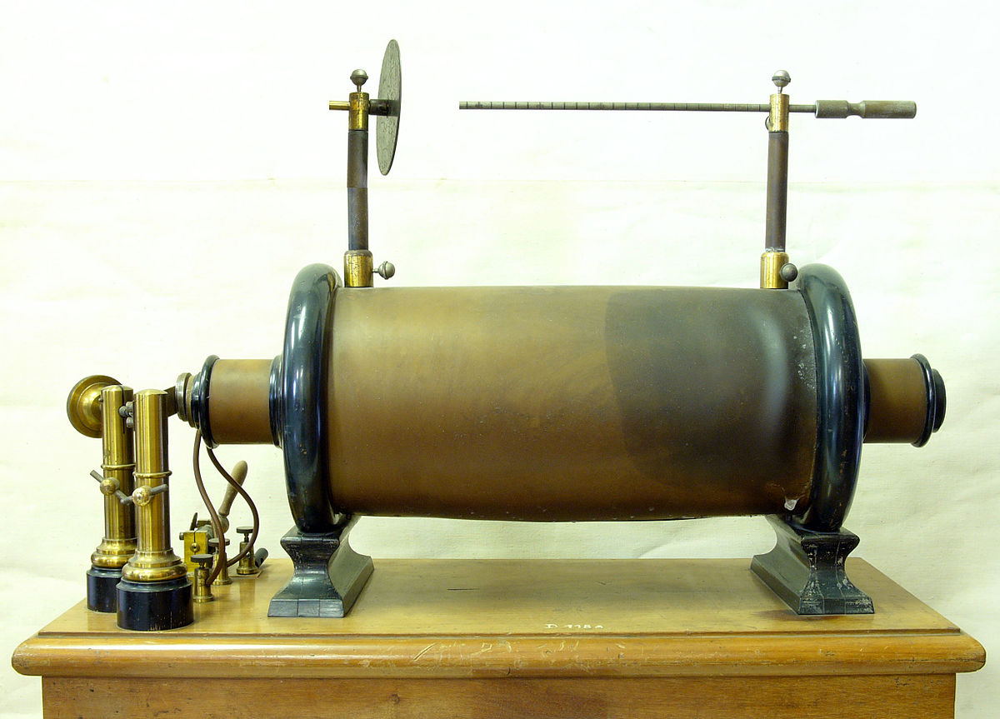
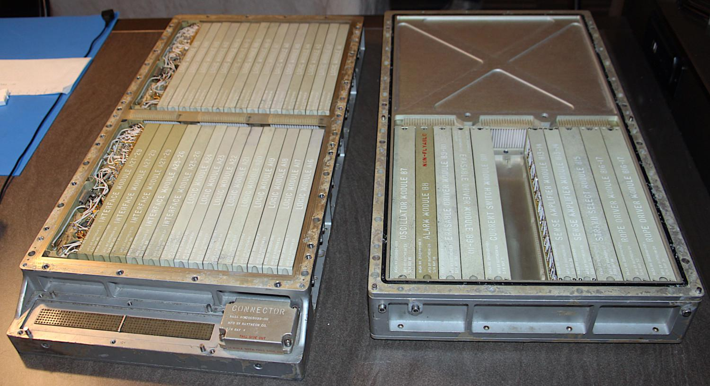
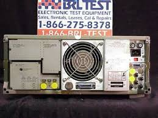

 1836: The induction coil was the “first” transformer, which was the first step into
creating a device that. It is made up of 2 coils, the inner and outer coil. Like a transformer,
it changes the voltage either higher or lower than the input voltage.
1910: Charles F. Kettering invented an inductive discharge ignition system for his company, for
Cadillac. The Kettering ignition system is a mechanically-switched version of the original color; the
transformer is the ignition coil. Variations of this were used as recently as the 1960s.
1926 Philip Ray Coursey created the 'Electrical Condenser'; a high frequency welding and furnaces,
among other uses.
1959 Mohamed M. Atalla and Dawon Kahng at Bell Labs invented The MOSFET (metal-oxide-semiconductor field-effect
transistor). It then became the most widely used power device for switching power supplies
Transistor oscillation and rectifying converter power supply system was created by Joseph E. Murphy and Francis J. Starzec, from General Motors Company
 1960s The Apollo Guidance Computer was developed by the MIT Instrumentation Laboratory for NASA’s ambitious moon missions (1966-1972). It
incorporated early switched power supplies.
1970 Tektronix starts using High-Efficiency Power Supply in its 7000-series oscilloscopes produced
1972 HP-35, Hewlett-Packard's first pocket calculator, is introduced with transistor switching power supply.
1973 Xerox uses switching power supplies in the Alto minicomputer.
1976 Robert Mammano developed the first integrated circuit for SMPS control, the SG1524.
1977 Apple designed a switching mode power supply.

1980 The HP8662A 10 kHz – 1.28 GHz synthesized signal generator went with a switched mode power supply. Although this is still very old, it set up the basis and
technology for the PSU we now know today.